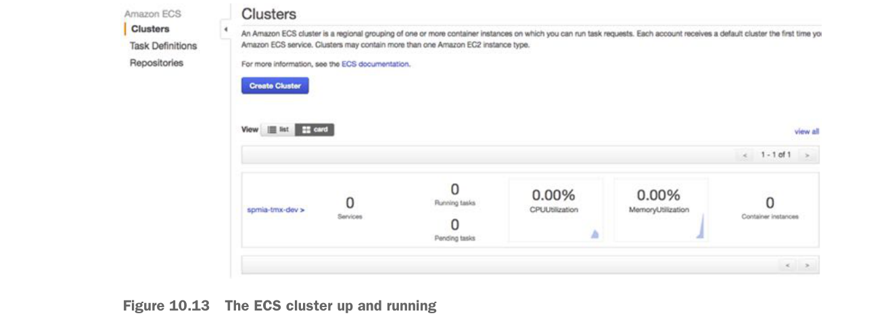

At this point you should see a screen tracking the status of the cluster creation. Once the cluster is created, you should see a blue button on the screen called “View Cluster.” Click on the “View Cluster” button. Figure 10.13 shows the screen that will appear after the “View Cluster” button has been pressed.
The ECS cluster up and running

At this point, you have all the infrastructure you need to successfully deploy the EagleEye microservices.
10.2 Beyond the infrastructure: deploying EagleEye
At this point you have the infrastructure set up and can now move into the second half of the chapter. In this second part, you’re going to deploy the EagleEye services to your Amazon ECS container. You’re going to do this in two parts. The first part of your